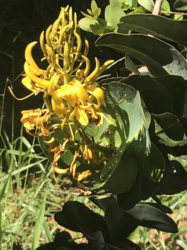

Vochysiaceae
(No widely accepted common name)
Vochysiaceae is a family of trees, shrubs, and subshrubs primarily distributed in the Neotropics, with a smaller presence in West Africa. They typically have opposite or whorled simple leaves with stipules. The flowers are characteristically bilaterally symmetrical (zygomorphic), often yellow or orange, with one calyx lobe often forming a nectar spur, and usually only a single fertile stamen. The fruit is frequently a capsule with winged seeds or a winged samara, adapted for wind dispersal.
Overview
Vochysiaceae comprises about 6-8 genera and around 200-220 species. The vast majority of species are found in the tropical Americas (Neotropics), particularly in Brazil (especially the Cerrado savanna and Atlantic Forest) and surrounding countries, where they can be ecologically significant as canopy trees or savanna shrubs. Two genera, Erismadelphus and Korupodendron, are endemic to tropical West Africa.
Members of this family often play important roles in their ecosystems. Many large trees in the genus Vochysia are prominent components of tropical forests, while other genera like Qualea are characteristic of savanna vegetation. Their often showy, zygomorphic flowers attract specialized pollinators, including bees and hummingbirds. The prevalence of winged fruits and seeds points to wind dispersal as a key strategy, especially for canopy trees.
Economically, some species provide timber, although often not of primary commercial importance. Certain species may be used locally for firewood, charcoal, or traditional medicine. The family is of significant botanical interest due to its unusual floral structure (especially the single stamen) within the predominantly radially symmetrical order Myrtales, and its biogeographic link between South America and Africa.
Quick Facts
- Scientific Name: Vochysiaceae
- Common Name: (No widely accepted common name)
- Number of Genera: Approximately 6-8
- Number of Species: Approximately 200-220
- Distribution: Neotropics (mainly South America) and tropical West Africa.
- Evolutionary Group: Eudicots - Rosids - Malvids - Order Myrtales
Key Characteristics
Growth Form and Habit
Mostly trees (ranging from small to very large canopy emergents) and shrubs, less commonly subshrubs. Plants sometimes contain resinous substances or colored sap.
Leaves
Leaves are usually opposite or arranged in whorls of 3-5 (rarely alternate). They are simple with entire (smooth) margins. Venation is typically pinnate. Stipules are usually present, often small and located between the petioles (interpetiolar) or on the petiole base (intrapetiolar), sometimes falling early.
Inflorescence
Inflorescences are typically terminal or axillary, often large and branched, commonly panicles, thyrses (mixed panicle/cyme structure), or raceme-like arrangements.
Flowers
Flowers are usually bisexual and characteristically strongly zygomorphic (bilaterally symmetrical). They are often showy, commonly yellow or orange, but also pink or white.
- Calyx: Sepals typically 5, fused at the base (connate). The calyx is often unequal, with one sepal (usually the posterior one, furthest from the bract) enlarged and modified into a prominent nectar-containing spur.
- Corolla: Petals usually number 1 to 3 (rarely 5, sometimes absent), free, unequal, and often clawed (having a narrow base).
- Androecium: The most distinctive feature is usually the presence of only 1 fertile stamen (rarely 2-5). This stamen is typically large and positioned opposite one of the petals. Staminodes (sterile, non-functional stamens) are often present, sometimes resembling small petals or filaments, numbering 1-4 (or more).
- Gynoecium: Ovary is usually superior (rarely inferior or semi-inferior), typically composed of 3 fused carpels forming a 3-locular ovary (sometimes 1-locular). Placentation is axile (ovules attached to the central axis) with few to many ovules per locule. There is a single, often slender style, sometimes bent or hooked, with a small stigma.
Fruits and Seeds
The most common fruit type is a loculicidal capsule, typically 3-angled or 3-winged, splitting open along the locule midlines to release the seeds. The seeds themselves are often winged (samaroid seeds), facilitating wind dispersal. Alternatively, the entire fruit may be a samara (a dry, indehiscent winged fruit, e.g., in some Qualea, Erisma). Less commonly, the fruit is a nut or drupe. Seeds generally lack endosperm or have only sparse endosperm.
Chemical Characteristics
Many species in the family are known to be aluminum accumulators, thriving in soils rich in this element. They may also contain various secondary metabolites like tannins, saponins, and alkaloids. Resinous exudates are sometimes present.
Field Identification
Identifying Vochysiaceae relies heavily on recognizing their unique floral structure within the context of their woody habit and leaf arrangement, primarily in Neotropical or West African regions.
Primary Identification Features
- Habit: Tree or shrub.
- Leaves: Opposite or whorled, simple, entire margins, usually with stipules.
- Flowers: Strongly zygomorphic (bilaterally symmetrical), often yellow/orange.
- Calyx: One sepal typically modified into a nectar spur.
- Stamens: Usually only 1 fertile stamen present.
- Fruit: Often a 3-valved capsule with winged seeds, or a samara (winged fruit).
- Distribution: Neotropics or West Africa.
Secondary Identification Features
- Petals: Usually 1-3, unequal.
- Ovary: Usually superior, 3-locular.
- Inflorescence: Often large panicles or thyrses.
- Stipules: Small, often interpetiolar.
Seasonal Identification Tips
- Flowering/Fruiting: Timing is highly variable depending on species and tropical location; often conspicuous when in bloom due to flower color and inflorescence size. Winged fruits/seeds may be visible after flowering.
- Vegetative: Opposite/whorled simple leaves on trees/shrubs are common, but require floral/fruit characters for confirmation.
Common Confusion Points
The unique flower structure helps distinguish Vochysiaceae, but confusion might arise with:
- Malpighiaceae: Also in Myrtales (though more distantly related), often woody with opposite leaves. Flowers are zygomorphic or actinomorphic, but typically have 5 clawed petals, distinctive paired glands on the sepals (lacking in Vochysiaceae), and usually 10 stamens. Fruit often a samara or schizocarp with wings derived differently.
- Fabaceae (Pea family): Flowers are zygomorphic (papilionaceous), but structure is very different (banner, wings, keel, usually 10 stamens). Fruit is a legume. Leaves often compound.
- Other Myrtales families (Myrtaceae, Melastomataceae, Lythraceae, Onagraceae): These generally have actinomorphic (radially symmetrical) flowers, often with numerous stamens (Myrtaceae) or distinctive stamen/anther shapes (Melastomataceae), and different ovary/fruit structures. They lack the spurred calyx and single stamen combination.
The combination of opposite/whorled simple leaves, strongly zygomorphic flowers with a spurred calyx, usually only 1 fertile stamen, and often winged fruits/seeds is highly characteristic of Vochysiaceae.
Field Guide Quick Reference
Look For:
- Tree or shrub
- Opposite/whorled simple leaves
- Stipules present
- Zygomorphic flowers (often yellow/orange)
- Spurred calyx lobe
- Usually 1 fertile stamen
- Fruit often capsule w/ winged seeds or samara
- Neotropics / W. Africa
Key Variations:
- Number of petals (1-3)
- Ovary position (usually superior)
- Fruit type (capsule vs. samara vs. rare others)
- Flower color
Notable Examples
Includes important canopy trees and savanna shrubs in the Neotropics.

Vochysia spp.
(Various common names, e.g., Quaruba, Yemeri)
The largest genus (~100+ species), primarily trees found from Mexico to South America. Often have whorled leaves and large terminal panicles of bright yellow zygomorphic flowers with 1 fertile stamen. Fruits are 3-valved capsules releasing winged seeds. Many are important timber trees or canopy components.

Qualea spp.
(Various common names, e.g., Pau-terra)
Another large Neotropical genus (~60 species) of trees and shrubs, particularly common in savannas like the Brazilian Cerrado. Flowers are zygomorphic, often showy (white, pink, lilac, yellow), typically with only 1 petal and 1 fertile stamen. Fruit is usually a woody capsule with winged seeds, sometimes a samara.

Salvertia convallariodora
Pau-de-arara, Colher-de-vaqueiro
A monotypic genus (containing only this species) characteristic of the Brazilian Cerrado. A small, gnarled tree with large, leathery leaves clustered at branch tips. Flowers are large, white, fragrant, and less strongly zygomorphic than other Vochysiaceae, possessing 5 petals and 5 fertile stamens (aberrant for the family). Fruit is a large woody capsule.
Phylogeny and Classification
Vochysiaceae is placed within the large order Myrtales, which belongs to the malvid (or eurosid II) clade of rosids. Myrtales is characterized by features such as opposite leaves (common but not universal), flowers with a hypanthium (floral cup), and often inferior ovaries, although Vochysiaceae typically has a superior ovary.
Molecular phylogenetic studies confirm Vochysiaceae as a distinct lineage within Myrtales. Its exact position relative to other families can vary slightly, but it is generally considered part of the core Myrtales clade, which includes major families like Myrtaceae, Melastomataceae, Lythraceae, Onagraceae, and Combretaceae. The strong floral zygomorphy and reduction to a single stamen make Vochysiaceae morphologically unique within the predominantly actinomorphic Myrtales.
Position in Plant Phylogeny
- Kingdom: Plantae
- Clade: Angiosperms (Flowering plants)
- Clade: Eudicots
- Clade: Rosids
- Clade: Malvids (Eurosids II)
- Order: Myrtales
- Family: Vochysiaceae
Evolutionary Significance
Vochysiaceae represents a fascinating evolutionary trajectory within the Myrtales:
- Floral Specialization: Exhibits extreme modification of the typical Myrtales flower plan, with strong zygomorphy, a spurred calyx, reduction of petals, and most notably, reduction to a single fertile stamen in most genera, likely linked to specialized pollination strategies.
- Neotropical Radiation: Shows significant diversification in South America, becoming a major component of forest canopies and savanna ecosystems.
- Wind Dispersal Adaptations: The frequent evolution of winged seeds and fruits (samaras) is a key adaptation for dispersal, particularly for large trees.
- Biogeographic Link: The presence of genera in both South America and West Africa provides evidence for ancient transatlantic connections or dispersal events.
- Aluminum Accumulation: Adaptation to aluminum-rich soils is an important physiological specialization, particularly relevant in ecosystems like the Cerrado.